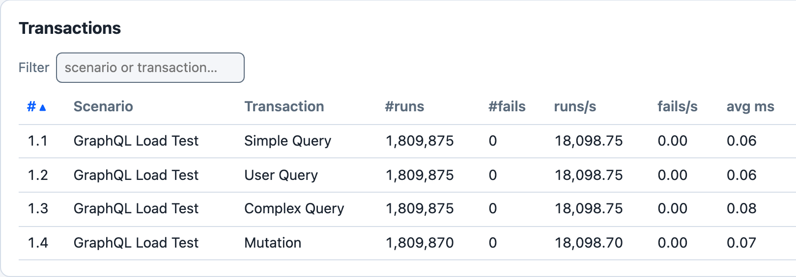
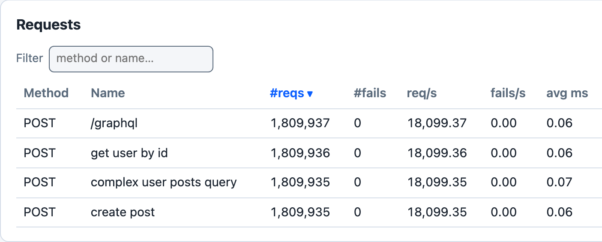

GraphQL
Goose 0.19 adds two helper methods that send GraphQL queries and mutations.


cargo run --release --features dashboard --example graphql_loadtest -- --host http://127.0.0.1:4400 -u 5 -r 5 -t 3m --no-reset-metrics --dashboard -q, against a local Node server that answers each of the example’s four operations at POST /graphql with a 200 and a JSON data body without delay, 100 seconds in.
The transactions are named with set_name(), and three of their requests with post_graphql_named(). Simple Query’s request is sent with post_graphql(), which names it by its path, POST /graphql. No transaction waits, and this server answers without delay, so 5 users send about 72,000 requests a second; the Sample Output below comes from a slower server. With -q Goose does not print the dashboard’s address when it starts: open http://127.0.0.1:5118 while the test runs. If that tab is still open when the run ends, Goose prints the address and waits for Ctrl-C.
GraphQL Helper Methods
post_graphql(): POST a GraphQL query as JSON to a path; the metrics name the request by its path, for examplePOST /graphqlpost_graphql_named(): the same, with a name for the request in the metrics, for examplePOST get user by id
Both take the request body as anything that implements serde::Serialize, usually a serde_json::Value built with json!(), and return a GooseResponse, like the other request helpers.
GraphQL Endpoint Configuration
There is no configured GraphQL endpoint: the path is the first argument of each call, and Goose prepends the host as it does for every request. By convention, most GraphQL APIs use /graphql, but you can specify any path. In this fragment query is a serde_json::Value:
// Using the conventional /graphql endpoint
let _goose = user.post_graphql("/graphql", &query).await?;
// Using a custom endpoint
let _goose = user.post_graphql("/api/graphql", &query).await?;Example: GraphQL Load Test
The examples/graphql_loadtest.rs example defines one scenario, GraphQL Load Test, with four transactions. No transaction sets a weight, and the scenario sets no wait time, so each user runs the four in turn, without pausing, for as long as the load test runs. Each one POSTs to /graphql:
| Transaction | Sends | Request name in the metrics |
|---|---|---|
Simple Query | the query { __typename }, with post_graphql() | POST /graphql |
User Query | a GetUser query with the variable id | POST get user by id |
Complex Query | a GetUserWithPosts query for a user’s posts and their comments, with the variables userId and first | POST complex user posts query |
Mutation | a CreatePost mutation with an input variable | POST create post |
Key Features
JSON Query Construction
Each query is a serde_json::Value built with json!().
Variables
Variables go in the JSON value’s variables field, beside its query field, as User Query, Complex Query and Mutation show.
Named Requests
post_graphql_named() gives each operation its own row in the metrics. Every request made with post_graphql() to the same path shares one row.
Weighted Transactions
set_weight() makes one operation run more often than another, such as more reads than writes. The example leaves every transaction at the default weight of 1.
Advanced Usage
Error Handling
Goose judges a GraphQL request by its HTTP status code, like any other request, so a GraphQL error returned with a 200 counts as a success. To catch those, read the response body and call set_failure:
async fn validated_graphql_transaction(user: &mut GooseUser) -> TransactionResult {
let query = json!({
"query": "query GetUser($id: ID!) { user(id: $id) { id name } }",
"variables": { "id": "invalid-id" }
});
let mut goose = user
.post_graphql_named("/graphql", &query, "get user with validation")
.await?;
if let Ok(response) = goose.response {
match response.json::<serde_json::Value>().await {
Ok(json) => {
if json.get("errors").is_some() {
return user.set_failure("GraphQL errors returned", &mut goose.request, None, None);
}
}
Err(_) => {
return user.set_failure("Invalid JSON response", &mut goose.request, None, None);
}
}
}
Ok(())
}Custom Headers
If your GraphQL API requires authentication or custom headers, you can use the lower-level request building approach:
async fn authenticated_graphql_transaction(user: &mut GooseUser) -> TransactionResult {
let query = json!({
"query": "query GetPrivateData { privateData { id value } }"
});
// Build custom request with authentication header
let request_builder = user
.get_request_builder(&GooseMethod::Post, "/graphql")?
.header("Authorization", "Bearer your-token-here")
.json(&query);
let goose_request = GooseRequest::builder()
.set_request_builder(request_builder)
.name("authenticated query")
.build();
let _goose = user.request(goose_request).await?;
Ok(())
}Both are fragments: they need use goose::prelude::*; and use serde_json::json;, and a scenario that registers them.
Sample Output
Running the example for 30 seconds with 5 users, against a small local server that answers every POST to /graphql, after 5 to 25 ms, with a 200 and a JSON body:
$ cargo run --release --example graphql_loadtest -- --host http://localhost:8080 --users 5 --run-time 30s
19:53:20 [INFO] Output verbosity level: INFO
19:53:20 [INFO] Logfile verbosity level: WARN
19:53:20 [INFO] users = 5
19:53:20 [INFO] run_time = 30
19:53:20 [INFO] global host configured: http://localhost:8080
19:53:20 [INFO] [scheduler]: allocating transactions and scenarios with RoundRobin scheduler
19:53:20 [INFO] [scheduler]: initializing 5 user states...
19:53:20 [INFO] [controller]: Telnet listening on: 127.0.0.1:5116
19:53:20 [INFO] entering GooseAttack phase: Increase
19:53:20 [INFO] [user 1]: launching user from GraphQL Load Test
19:53:21 [INFO] [user 2]: launching user from GraphQL Load Test
19:53:22 [INFO] [user 3]: launching user from GraphQL Load Test
19:53:23 [INFO] [user 4]: launching user from GraphQL Load Test
19:53:24 [INFO] [user 5]: launching user from GraphQL Load Test
19:53:25 [INFO] printing running metrics after 5 seconds...
Goose starts one user a second, and when all 5 have launched it prints the metrics so far and resets them. Those tables are left out here.
All 5 users launched, resetting metrics (disable with --no-reset-metrics).
19:53:25 [INFO] entering GooseAttack phase: Maintain
19:53:55 [INFO] entering GooseAttack phase: Decrease
19:53:55 [INFO] [user 2]: exiting from GraphQL Load Test
19:53:55 [INFO] [user 4]: exiting from GraphQL Load Test
19:53:55 [INFO] [user 1]: exiting from GraphQL Load Test
19:53:55 [INFO] [user 5]: exiting from GraphQL Load Test
19:53:55 [INFO] [user 3]: exiting from GraphQL Load Test
19:53:55 [INFO] entering GooseAttack phase: Shutdown
19:53:55 [INFO] printing final metrics after 30 seconds...
=== PER SCENARIO METRICS ===
------------------------------------------------------------------------------
Name | # users | # times run | scenarios/s | iterations
------------------------------------------------------------------------------
1: GraphQL Load Test | 5 | 2254 | 75.13 | 450.80
------------------------------------------------------------------------------
Name | Avg (ms) | Min | Max | Median
------------------------------------------------------------------------------
1: GraphQL Load Test | 67 | 27 | 103 | 67
=== PER TRANSACTION METRICS ===
------------------------------------------------------------------------------
Name | # times run | # fails | trans/s | fail/s
------------------------------------------------------------------------------
1: GraphQL Load Test
1: Simple Query | 2,256 | 0 (0%) | 75.20 | 0.00
2: User Query | 2,256 | 0 (0%) | 75.20 | 0.00
3: Complex Query | 2,256 | 0 (0%) | 75.20 | 0.00
4: Mutation | 2,256 | 0 (0%) | 75.20 | 0.00
-------------------------+---------------+----------------+----------+--------
Aggregated | 9,024 | 0 (0%) | 300.80 | 0.00
------------------------------------------------------------------------------
Name | Avg (ms) | Min | Max | Median
------------------------------------------------------------------------------
1: GraphQL Load Test
1: Simple Query | 17 | 5.28 | 29 | 17
2: User Query | 17 | 5.25 | 29 | 17
3: Complex Query | 17 | 5.29 | 28 | 17
4: Mutation | 17 | 5.41 | 31 | 17
-------------------------+-------------+------------+-------------+-----------
Aggregated | 17 | 5.25 | 31 | 17
=== PER REQUEST METRICS ===
------------------------------------------------------------------------------
Name | # reqs | # fails | req/s | fail/s
------------------------------------------------------------------------------
POST /graphql | 2,258 | 0 (0%) | 75.27 | 0.00
POST complex user post.. | 2,256 | 0 (0%) | 75.20 | 0.00
POST create post | 2,256 | 0 (0%) | 75.20 | 0.00
POST get user by id | 2,257 | 0 (0%) | 75.23 | 0.00
-------------------------+---------------+----------------+----------+--------
Aggregated | 9,027 | 0 (0%) | 300.90 | 0.00
------------------------------------------------------------------------------
Name | Avg (ms) | Min | Max | Median
------------------------------------------------------------------------------
POST /graphql | 17 | 5.28 | 29 | 17
POST complex user post.. | 17 | 5.27 | 28 | 17
POST create post | 17 | 5.39 | 31 | 17
POST get user by id | 17 | 5.24 | 29 | 17
-------------------------+-------------+------------+-------------+-----------
Aggregated | 17 | 5.24 | 31 | 17
------------------------------------------------------------------------------
Slowest page load within specified percentile of requests (in ms):
------------------------------------------------------------------------------
Name | 50% | 75% | 98% | 99% | 99.9% | 99.99%
------------------------------------------------------------------------------
POST /graphql | 17 | 22 | 27 | 27 | 28 | 29
POST complex user post.. | 17 | 22 | 27 | 27 | 28 | 28
POST create post | 17 | 22 | 27 | 27 | 28 | 31
POST get user by id | 17 | 22 | 27 | 27 | 28 | 29
-------------------------+--------+--------+--------+--------+--------+-------
Aggregated | 17 | 22 | 27 | 27 | 28 | 29
------------------------------------------------------------------------------
Name | Status codes
------------------------------------------------------------------------------
POST /graphql | 2,258 [200]
POST complex user post.. | 2,256 [200]
POST create post | 2,256 [200]
POST get user by id | 2,257 [200]
-------------------------+----------------------------------------------------
Aggregated | 9,027 [200]
=== OVERVIEW ===
------------------------------------------------------------------------------
Action Started Stopped Elapsed Users
------------------------------------------------------------------------------
Increasing: 2026-10-26 20:53:20 - 2026-10-26 20:53:25 (00:00:05, 0 -> 5)
Maintaining: 2026-10-26 20:53:25 - 2026-10-26 20:53:55 (00:00:30, 5)
Decreasing: 2026-10-26 20:53:55 - 2026-10-26 20:53:55 (00:00:00, 0 <- 5)
Target host: http://localhost:8080/
goose v0.19.0
------------------------------------------------------------------------------
Key Observations
Each request made with post_graphql_named() appears under its own name, such as POST get user by id, and the one made with post_graphql() under its path, POST /graphql. With no weights set, each transaction runs about as often as the others, so the four requests have about the same counts. Every request returned 200.
Complete Source Code
//! Example demonstrating GraphQL load testing with Goose.
//!
//! This example shows how to use Goose's GraphQL helper methods to load test
//! a GraphQL API. The GraphQL helpers use the existing HTTP infrastructure
//! and provide convenient methods for making GraphQL queries.
//!
//! ## Usage
//!
//! To compile and run this example:
//!
//! ```bash
//! cargo run --example graphql_loadtest -- --host https://api.example.com
//! ```
//!
//! ## Configuration Options
//!
//! - `--host`: Target host to load test
//! - `--users`: Number of concurrent users (default: one per CPU)
//! - `--run-time`: Duration to run the test (e.g., "30s", "5m")
//!
//! ## GraphQL Helper Methods
//!
//! Goose provides two GraphQL helper methods:
//! - `post_graphql()`: Basic GraphQL queries
//! - `post_graphql_named()`: Named GraphQL queries for better metrics tracking
//!
//! ## Example Commands
//!
//! Basic GraphQL load test:
//! ```bash
//! cargo run --example graphql_loadtest -- --host https://api.github.com --users 5 --run-time 30s
//! ```
//!
//! Using a custom GraphQL endpoint path:
//! ```bash
//! cargo run --example graphql_loadtest -- --host https://api.example.com --users 10 --run-time 1m
//! ```
use goose::prelude::*;
use serde_json::json;
#[tokio::main]
async fn main() -> Result<(), GooseError> {
GooseAttack::initialize()?
.register_scenario(
scenario!("GraphQL Load Test")
.set_weight(1)?
.register_transaction(transaction!(simple_query).set_name("Simple Query"))
.register_transaction(transaction!(user_query).set_name("User Query"))
.register_transaction(transaction!(complex_query).set_name("Complex Query"))
.register_transaction(transaction!(mutation_example).set_name("Mutation")),
)
.execute()
.await?;
Ok(())
}
/// Simple GraphQL query example
async fn simple_query(user: &mut GooseUser) -> TransactionResult {
let query = json!({
"query": "{ __typename }"
});
let _goose = user.post_graphql("/graphql", &query).await?;
Ok(())
}
/// User query with variables
async fn user_query(user: &mut GooseUser) -> TransactionResult {
let query = json!({
"query": "query GetUser($id: ID!) { user(id: $id) { id name email } }",
"variables": {
"id": "123"
}
});
// Use named query for better metrics tracking
let _goose = user
.post_graphql_named("/graphql", &query, "get user by id")
.await?;
Ok(())
}
/// Complex query with multiple fields and nested data
async fn complex_query(user: &mut GooseUser) -> TransactionResult {
let query = json!({
"query": r#"
query GetUserWithPosts($userId: ID!, $first: Int!) {
user(id: $userId) {
id
name
email
posts(first: $first) {
edges {
node {
id
title
content
createdAt
comments(first: 5) {
edges {
node {
id
content
author {
name
}
}
}
}
}
}
}
}
}
"#,
"variables": {
"userId": "456",
"first": 10
}
});
let _goose = user
.post_graphql_named("/graphql", &query, "complex user posts query")
.await?;
Ok(())
}
/// GraphQL mutation example
async fn mutation_example(user: &mut GooseUser) -> TransactionResult {
let mutation = json!({
"query": r#"
mutation CreatePost($input: CreatePostInput!) {
createPost(input: $input) {
id
title
content
author {
id
name
}
}
}
"#,
"variables": {
"input": {
"title": "Load Test Post",
"content": "This post was created during a load test",
"authorId": "789"
}
}
});
let _goose = user
.post_graphql_named("/graphql", &mutation, "create post")
.await?;
Ok(())
}
#[cfg(test)]
mod tests {
use super::*;
#[tokio::test]
async fn test_graphql_transactions() {
// Test that transactions can be created without errors
let simple_transaction = transaction!(simple_query).set_name("Simple Query");
let user_transaction = transaction!(user_query).set_name("User Query");
let complex_transaction = transaction!(complex_query).set_name("Complex Query");
let mutation_transaction = transaction!(mutation_example).set_name("Mutation");
assert_eq!(simple_transaction.name, "Simple Query");
assert_eq!(user_transaction.name, "User Query");
assert_eq!(complex_transaction.name, "Complex Query");
assert_eq!(mutation_transaction.name, "Mutation");
}
#[test]
fn test_scenario_creation() {
// Test that the scenario can be created properly
let scenario = scenario!("GraphQL Load Test")
.set_weight(1)
.unwrap()
.register_transaction(transaction!(simple_query).set_name("Simple Query"))
.register_transaction(transaction!(user_query).set_name("User Query"))
.register_transaction(transaction!(complex_query).set_name("Complex Query"))
.register_transaction(transaction!(mutation_example).set_name("Mutation"));
assert_eq!(scenario.name, "GraphQL Load Test");
assert_eq!(scenario.weight, 1);
assert_eq!(scenario.transactions.len(), 4);
}
#[test]
fn test_json_query_creation() {
// Test that JSON queries can be created properly
let query = json!({
"query": "{ __typename }"
});
assert!(query.is_object());
assert!(query.get("query").is_some());
assert_eq!(query["query"], "{ __typename }");
}
#[test]
fn test_complex_json_query() {
// Test complex query with variables
let query = json!({
"query": "query GetUser($id: ID!) { user(id: $id) { id name } }",
"variables": {
"id": "123"
}
});
assert!(query.is_object());
assert!(query.get("query").is_some());
assert!(query.get("variables").is_some());
assert_eq!(query["variables"]["id"], "123");
}
}